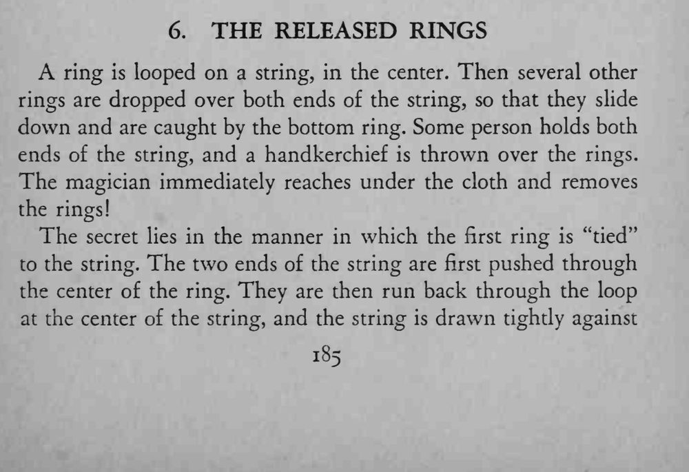
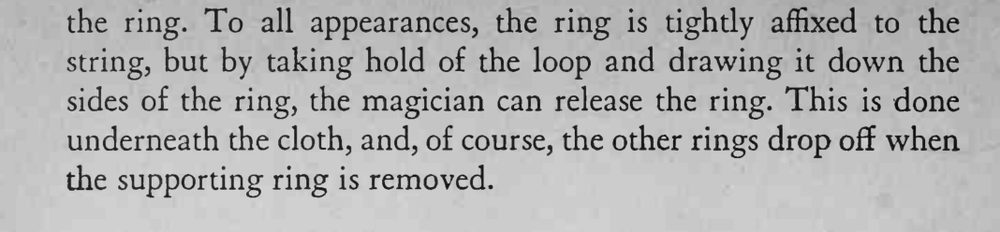

一只戒指挂在绳子中央，其他圆环套在绳上滑下来被它托住；手帕一盖，魔术师伸手进去，就把所有环都取了下来。
关键是第一只戒指的系法；原文此处不全，拉绳圈时要贴着戒指边缘往下拽。


A ring is looped on a string, in the center. Then several other rings are dropped over both ends of the string, so that they slide down and are caught by the bottom ring. Some person holds both ends of the string, and a handkerchief is thrown over the rings. The magician immediately reaches under the cloth and removes the rings! The secret lies in the manner in which the first ring is "tied" to the string. The two ends of the string are first pushed through the center of the ring. They are then run back through the loop at the center of the string, and the string is drawn tightly against string, but by taking hold of the loop and drawing it down the sides of the ring, the magician can release the ring. This is done underneath the cloth, and, of course, the other rings drop off when the supporting ring is removed.